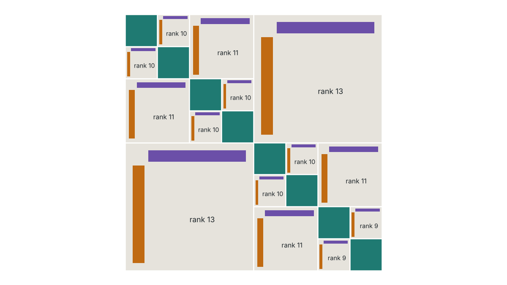
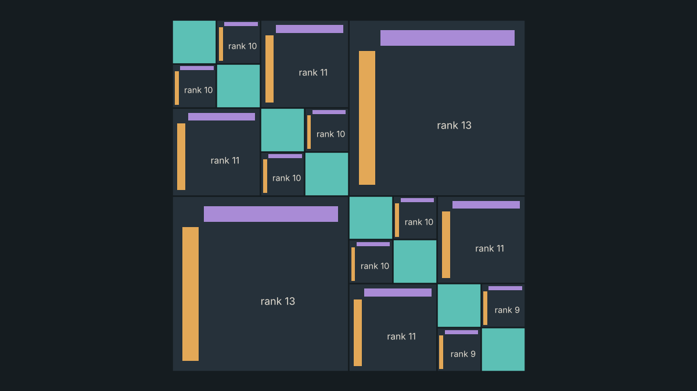
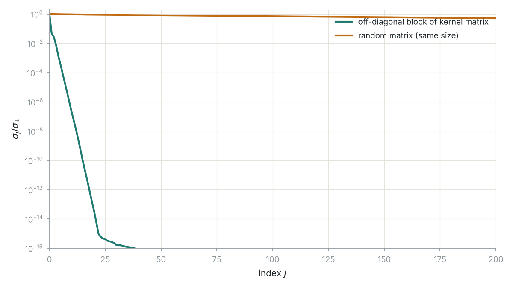
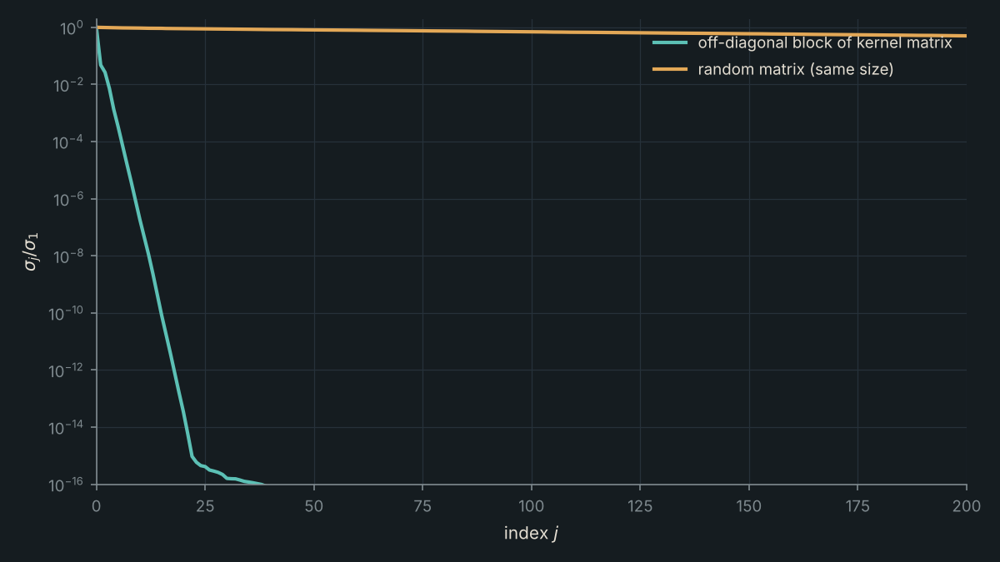

Fast Solvers for HSS Matrices
Many matrices that arise in practice, for example from integral equations, kernel methods and PDE discretizations, are dense but highly structured: their off-diagonal blocks are numerically low rank. Hierarchically semi-separable (HSS) matrices capture this structure through a recursive partition of the matrix, storing each off-diagonal block in compressed form. This allows matrix–vector products and direct solves in close to linear time, instead of the cubic cost of dense linear algebra.
I develop and analyze algorithms that exploit HSS structure for linear optimization problems, including least-squares and minimum-norm problems. For square systems the standard direct solver is based on the ULV factorization; my work extends this kind of fast factorization to the minimum-norm setting.
I am also developing publicly accessible MATLAB classes for computing with these structured matrices efficiently and robustly.




Related
- TalkEfficient Solvers for Linear Optimization via the Hierarchically Semi-Separable Matrix Factorization
- TalkEfficient Solvers for Linear Optimization via the Hierarchically Semi-Separable Matrix Factorization